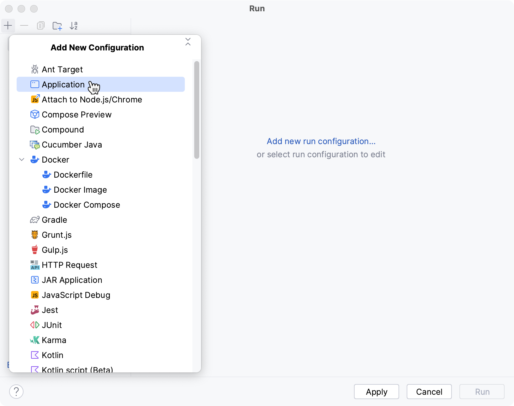
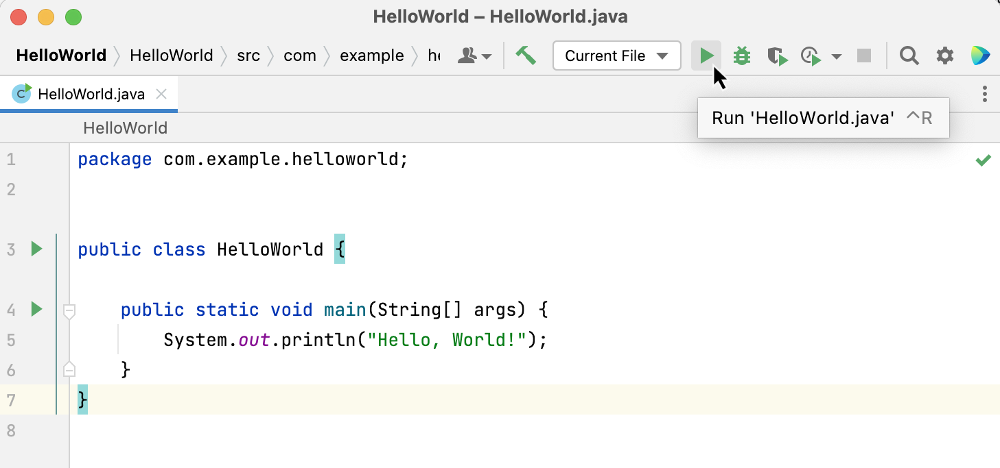
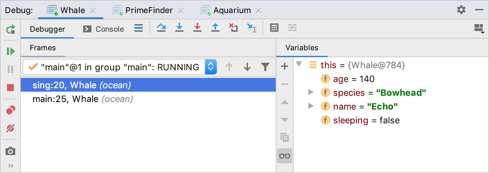
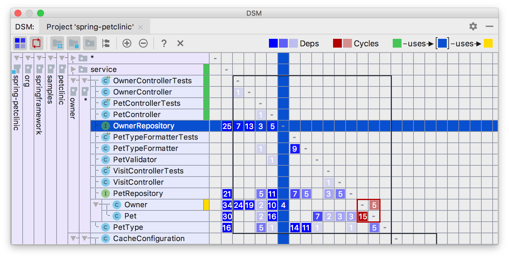

Atelier 05
Dans cette séance de laboratoire, vous pratiquerez les fonctionnalités de base de l'IDE, notamment la configuration du lanceur, le refactoring de base et l'utilisation du débogueur. Certaines parties de cette séance de laboratoire peuvent être réalisées en utilisant le code de votre projet TP, de plus, vous travaillerez avec un projet exemple disponible sur GitHub, incluant la documentation.
Configuration du lanceur
En cours, vous avez vu que le triangle vert peut être quelque peu trompeur. Par défaut, les triangles verts à côté de
votre code exécutent des méthodes main comme des applications Java standard. Cela peut entraîner des événements
complètement chaotiques si vous essayez d'exécuter un projet Maven sans configuration supplémentaire, car votre IDE
ignore effectivement toute configuration pom.xml que vous avez pu établir.
Lanceur Java standard
- Le triangle vert dans la barre supérieure ("
▶ ") peut cependant être entièrement configuré pour répondre à vos besoins. - Par défaut, vous n'aurez aucune configuration d'exécution, c'est-à-dire que le menu du lanceur sera grisé.
- Vous avez deux options pour créer une configuration d'exécution Java standard (sans Maven) :
- Cliquez sur l'un des triangles verts à côté de votre code. (Ce qui ajoutera implicitement une configuration d'exécution au menu grisé de la barre supérieure)
- Créez manuellement une configuration de lancement : cliquez sur le menu déroulant à côté du triangle vert de la
barre supérieure, puis sélectionnez
Modifier les configurations, puis+, puisApplication

Utilisez d'abord le triangle vert
Vous pouvez commencer par créer une configuration de lancement implicite en utilisant le triangle vert à côté de votre code. Ensuite, cliquez sur le menu déroulant pour inspecter quelle configuration de lancement a été effectivement créée.
Votre tour
- Créez un nouveau projet Maven et essayez de l'exécuter comme projet Java standard.
- Utilisez la commande d'archétype Maven pour initialiser un nouveau projet Maven "Hello World".
- Ouvrez-le dans IntelliJ.
- Cliquez sur le triangle vert affiché à gauche de la classe principale.
- Vérifiez que vous voyez
Hello, World!sur la console.
Ça fonctionne n'est pas la même chose que c'est correct.
Les utilisateurs inexpérimentés diagnostiquent souvent en catégories dichotomiques "Ça fonctionne" et "Ça ne fonctionne pas", sans aucune nuance quant à savoir si un programme qui peut être exécuté fait réellement ce qu'il devrait. Exécuter un projet Maven avec le triangle vert par défaut est un parfait exemple. Il semble fonctionner, le code est correctement exécuté. Mais aucun des avantages de Maven (gestion des dépendances, contrôles stricts de qualité pour les habitudes de code) n'est appliqué. La migration vers Maven n'a absolument aucun effet.
Lanceur(s) Maven
- Maintenant, vous voulez oublier à jamais les triangles verts à gauche de votre code !
- Au lieu de cela, créez une configuration de lanceur Maven en utilisant le menu déroulant des configurations d'exécution de la barre supérieure.
Votre tour
- Créez une configuration de lanceur Maven, comme présenté dans la dernière unité de cours.
- Vous devrez également ajouter le plugin
execaupom.xmldu projet, car sinon la configuration de lancement ne compilera que votre code, sans jamais l'exécuter.- Revisitez l'unité de cours sur Maven et cherchez comment ajouter le plugin
execaupom.xmldu projet HelloWorld que vous avez créé précédemment.
- Revisitez l'unité de cours sur Maven et cherchez comment ajouter le plugin
Utilisez le raccourci pour exécuter votre programme
Une fois que votre configuration de lanceur fonctionne, recherchez le raccourci pour ré-exécuter le dernier lanceur. Consultez la fiche de triche des raccourcis et identifiez le raccourci de ré-exécution, pour exécuter votre code en une seule pression de touche.
Refactoring de base
Le menu de refactoring d'IntelliJ vous permet de restructurer votre code, sans avoir réellement besoin de le réécrire.
- Le refactoring est notamment utile pour les projets logiciels plus importants, pour garantir que les modifications de code sont réalisées de manière cohérente dans tout un projet.
- Le point de départ est toujours un clic droit sur un élément de code, suivi de Refactor (ou
simplement
Shift+F6)
Renommage
Le renommage peut être appliqué à toute variable, méthode, classe ou paramètre. Un avantage pratique est que le renommage des variables est également appliqué à la JavaDoc, c'est-à-dire que vous n'avez pas besoin d'ajuster manuellement la cohérence de la javadoc lorsque vous renommez un paramètre de méthode avec le menu de refactoring.
Votre tour
- Clonez le projet exemple Zoo en utilisant :
git clone https://github.com/m5c/Zoo.git - Ouvrez la classe
Animal.javaet utilisez le menu de refactoring pour renommer la variablefavouriteFoodenfavouriteToy. - Familiarisez-vous avec le fonctionnement du menu de renommage (vous devriez voir un rectangle autour de la variable à renommer, appuyez sur Entrée lorsque vous avez terminé).
- Vérifiez que toutes les occurrences ont été renommées, par exemple aussi les informations
JavaDocet legettercorrespondant ainsi que la méthodetoString. - Configurez une configuration de lanceur Maven dans IntelliJ et vérifiez que le code peut toujours être exécuté.
- Le
pom.xmldu zoo définit un pluginexec, donc la commande Maven à utiliser est :mvn clean package exec:java
- Le
Info
Le projet zoo est également un parfait exemple de ce qui se passe lorsque un projet Maven est exécuté avec les triangles verts Java par défaut. À moins qu'un lanceur Maven ne soit configuré, IntelliJ ignorera complètement le pom.xml,
c'est-à-dire que les configurations javadoc et checkstyle existantes
seront ignorées et ce projet n'aura plus de javadoc cohérente et le code
ne sera pas testé pour des défauts de formatage (même s'il semble
"fonctionner").
Extraction de méthode
- L'extraction de méthode vous permet de refactoriser une séquence de lignes de code en une méthode dédiée.
- Cette stratégie a deux objectifs principaux :
- Regrouper des lignes de code pour qu'elles puissent être réutilisées par un appel de fonction plutôt que de dupliquer les lignes.
- Décomposer des méthodes trop longues, afin qu'elles soient plus faciles à comprendre.
Votre tour
- Ouvrez la classe
Zoo.javaet inspectez le constructeur. - Il devrait ressembler à ceci :
/**
* Private constructor, populates the zoo.
*/
private Zoo() {
openingHours = new OpeningHours();
animals = new LinkedHashMap<>();
addAnimal("Charly", new Animal("Chimpanzee", 10, "Bananas"));
addAnimal("Nemo", new Animal("Clownfish", 4, "Plankton"));
addAnimal("Dumbo", new Animal("Elephant", 13, "Peanuts"));
}
- Maintenant, imaginons que le zoo est rempli de triplés, c'est-à-dire que chaque animal existe trois fois, donc il y a
trois Charlys, trois Nemos et trois Dumbos.
- Il serait facile de copier-coller les lignes
addAnimal...existantes trois fois. - ... mais cela créerait une duplication de code, et nous essayons d'éviter cela !
- Il serait facile de copier-coller les lignes
- Au lieu de créer manuellement une nouvelle méthode, sélectionnez les trois lignes
addAnimal...et utilisez la méthode de refactoring pour extraire une nouvelle méthode. Vous pouvez utiliser :- Clic droit -> Refactoriser... -> Extraire méthode
Option (⌥)+Command (⌘)+M
- Vous devriez maintenant avoir les trois lignes dans une méthode dédiée.
- Appelez-la trois fois et dynamisez le zoo. Vérifiez la sortie du programme.
Utilisation du débogueur
- Dans la dernière unité de cours, vous avez vu que les programmes défectueux peuvent être analysés à l'aide du
débogueur.
- Le débogueur vous permet d'interroger (et de modifier !) l'état du programme à tout moment de son exécution.
- N'utilisez jamais des commandes
System.out.printdans votre code pour diagnostiquer un problème, utiliser le débogueur est beaucoup plus rapide, nécessite aucune modification du code et fournit beaucoup plus d'informations.
- Pour exécuter le débogueur, vous avez besoin d'une configuration de lanceur valide. La meilleure pratique est d'utiliser la configuration de lanceur appropriée, c'est-à-dire un lanceur Maven pour un projet Maven, etc.
- Cliquez sur le symbole
bug, à côté du triangle vert dans la barre supérieure, juste à côté du menu déroulant du lanceur.- Évitez de faire un clic droit sur le triangle à gauche de la liste de code, il s'agit d'un lanceur Java standard et il n'exécute pas nécessairement le programme comme vous l'attendez.

- Malheureusement, lorsque vous cliquez sur le bouton de débogage, rien de différent ne se passe. Car nous n'avons pas encore dit au débogueur où nous voulons inspecter l'exécution du programme (c'est-à-dire où nous voulons que le programme se fige). Nous avons besoin d'au moins un point d'arrêt !
Points d'arrêt
- Les points d'arrêt indiquent au débogueur de figer l'exécution du programme.
- Pensez-y comme à un film qui est en pause, où vous avez tout le temps d'inspecter tous les détails d'une image fixe, aussi longtemps que vous le souhaitez.
- Vous aurez probablement la chance de remarquer un nouveau détail.
Votre tour
- Pour créer un point d'arrêt : cliquez simplement un peu à droite du numéro de ligne où vous souhaitez que l'exécution
s'arrête.
- Vous verrez un cercle rouge apparaître. Félicitations, vous avez créé votre premier point d'arrêt !
- Si le cercle est en forme de losange, vous avez sélectionné une ligne qui ne peut pas être exécutée, par exemple une définition de méthode.
- Si rien ne se passe, vous avez sélectionné une ligne sans code, par exemple une ligne vide ou un commentaire.
Inspection de base
- Chaque fois que votre programme est suspendu sur un point d'arrêt, vous pouvez (entre autres) inspecter l'état des variables.
- Il existe trois façons d'inspecter l'état des variables :
- Pour les primitifs, la valeur est simplement imprimée en italique, à la fin de la ligne. Cependant, pour les objets, cela ne vous indique que l'adresse de l'objet, ce qui n'est généralement pas très utile.
- Pour les objets, vous pouvez simplement survoler la variable avec le curseur, une fenêtre contextuelle s'affichera et vous fournira les valeurs des champs internes de l'objet.
- Enfin, la fenêtre des variables vous permet d'explorer en profondeur toutes les variables et leur état à un moment donné.

Votre tour
- Placez un point d'arrêt sur la dernière ligne de votre constructeur
Zoo. - Exécutez le débogueur et vérifiez que votre programme se fige sur la ligne marquée.
- Inspectez l'état du programme, utilisez les différentes manières d'inspecter toutes les variables.
- Utilisez le panneau des variables pour modifier l'un des
NemosenCapitaine Nemo, puis poursuivez l'exécution du programme en utilisant le boutonReprendredans la fenêtre du débogueur.- Alternativement, vous pouvez également utiliser
Option (⌥)+Command (⌘)+Rpour reprendre.
- Alternativement, vous pouvez également utiliser
Navigation de base
- Souvent, vous ne savez pas exactement où se produit un bogue et vous devez d'abord le trouver.
- Heureusement, le débogueur vous permet également d'avancer étape par étape dans l'exécution du programme.
- Revenez à l'analogie du film, pensez à cela comme à avancer dans un film image par image (ou si vous êtes très old-school, à faire défiler la pellicule, une image à la fois).
- Revisitez le matériel de classe et familiarisez-vous avec le menu d'avancement étape par étape du débogueur.
Votre tour
- Placez un nouveau point d'arrêt sur la première ligne du constructeur
Zoo:openingHours = new OpeningHours();
- Démarrez votre programme à nouveau en mode débogage, vérifiez qu'il se fige sur la première ligne du constructeur.
- Inspectez attentivement quelles variables sont présentées dans la vue des variables et quelle valeur elles ont.
- Utilisez le bouton
step-overpour passer à la deuxième ligne.- Vérifiez à nouveau le panneau des variables. Qu'est-ce qui a changé ? Pouvez-vous corréler les changements avec la ligne unique qui vient d'être exécutée par le débogueur ?
- Sur la deuxième ligne, utilisez le bouton
step-intopour accéder à un appel de méthode.- Que s'est-il passé, où êtes-vous maintenant dans l'exécution du programme ? Trouvez un moyen de revenir à
l'exécution dans le constructeur
Zooprécédent.
- Que s'est-il passé, où êtes-vous maintenant dans l'exécution du programme ? Trouvez un moyen de revenir à
l'exécution dans le constructeur
Points d'arrêt conditionnels
- Souvent, vous ne vous intéressez pas à chaque fois qu'un point d'arrêt est atteint, mais à des situations spécifiques.
- Les points d'arrêt conditionnels vous permettent de faire exactement cela.
- Les points d'arrêt conditionnels ajoutent des informations contextuelles à un point d'arrêt, et le débogueur suspend alors l'exécution uniquement lorsque la condition fournie est remplie.
Votre tour
- Ouvrez la classe
Animal.javaet placez un point d'arrêt sur l'instruction de retour de la méthodetoString. - Déboguez votre programme. Le point d'arrêt sera atteint deux fois.
- Faites un clic droit sur le point d'arrêt et ajoutez une condition, afin qu'il ne se déclenche que pour les animaux de
l'espèce
Abeille Miel, mais pas pour d'autres espèces. - Déboguez à nouveau votre programme et vérifiez que le point d'arrêt n'est atteint qu'une seule fois.
Bonus : Matrice de dépendance
- Dans la dernière unité de cours sur les IDE, vous avez brièvement vu comment extraire une matrice de dépendance de classes d'une base de code.
- Les matrices de dépendance montrent pour chaque classe, combien de dépendances existent avec n'importe quelle autre classe.
Interprétation de la matrice
- Les matrices de dépendance offrent un aperçu rapide et la possibilité de repérer certaines défauts de conception,
notamment :
- Dépendances circulaires
- Violations de schéma architectural, par exemple, le modèle dépendant de la vue ou du contrôleur (dans MVC, seul le modèle ne doit contenir aucune logique ou avoir connaissance du contrôleur ou de la vue).
- Exemple : Dans la matrice de dépendance ci-dessous,
OwneretPetmontrent des dépendances circulaires :

Votre tour
- Chargez votre projet Halma et créez une matrice de dépendance.
- Inspectez la matrice et repérez comment le modèle MVC est représenté dans la matrice de dépendance.
- Testez votre compréhension :
- Que signifie le fait qu'une classe soit plus bas dans la représentation de la matrice ?
- Pourquoi toutes les cellules dans le triangle supérieur droit sont-elles vides ? ```